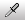

在瓦片地图上绘制
The following details the steps and tools for painting Tiles on a Tilemap. However, if you are painting an Isometric Tilemap, refer to Creating a Tile Palette for an Isometric Tilemap for specific steps and information.
To begin painting Tiles, select the Tilemap you want to paint on from the Active Tilemap drop-down menu in the Tilemap Palette window. Tilemaps created in the Scene’s hierarchy are automatically added to the drop-down menu. Only the currently selected Active Tilemap is affected by the Tile Palette painting tools.
Tilemap painting tools are found in a row at the top of the Tile Palette window. These tools can also be used to edit the Tile Palette itself.
Painting Tool Shortcuts
| 工具 | 快捷键 |
|---|---|
| 选择工具 | S |
| 移动工具 | M |
 画笔工具 画笔工具
|
B |
 框填工具 框填工具
|
U |
| 选取器工具 | I 使用__画笔工具__或__框填工具__时，按住 Ctrl__（在 macOS 上按住 Command__）暂时切换到此工具。 |
 橡皮擦工具 橡皮擦工具
|
D 使用__画笔工具__或__框填工具__时，按住 Shift 暂时切换到此工具。 |
| Flood Fill Tool | G |
选择工具
Use the Select Tool to select a Tile on the Active Tilemap or hold and drag over multiple Tiles to select more at once. The property details of selected Tiles are shown in the Inspector Window. See the Select Tool page for more information about the Grid Selection Properties and examples of the different Modify Tilemap options available.
After selecting Tiles with the Select Tool, you can use the Move Tool to move selected Tiles to a different position on the Tilemap.
Move Tool
Use the Move Tool to move the Select Tool’s Tile selection (the Move Tool cannot select Tiles itself). Hold and drag selected Tiles to another position on the Tilemap.
Paintbrush Tool
Use the Paintbrush Tool to select a Tile in the Tilemap Palette, or hold and drag over multiple Tiles to select more at once. Then click on any location on the Tilemap in the Scene to begin painting with your selected Tiles. Hold Shift while using the Paintbrush Tool to switch to the Erase Tool.

To select and paint with Tiles that are already on the Tilemap instead of the Tilemap Palette, hold Ctrl as you select Tiles on the Tilemap with the Paintbrush Tool. This briefly switches it to the Picker Tool to select the Tiles for painting.
Box Fill Tool
Use the Box Fill Tool to select a Tile in the Tilemap Palette, or hold and drag over multiple Tiles to select more at once. Selections made with the other painting tools are also valid. Hold and drag the Box Fill Tool over the Tilemap to draw a rectangular shape which fills with the selected Tile(s.)

Picker Tool
Use the Picker Tool to pick a Tile from the Tilemap or Tilemap palette; hold and drag over multiple Tiles to select more at once. The active tool switches to the Paintbrush Tool once a selection is made, to allow you to paint immediately on the Tilemap with the selected Tile(s).

Eraser Tool
Use the Eraser Tool to erase Tiles from the Tilemap by selecting them while the tool is enabled. To erase a larger area at once, hold and drag the Eraser Tool to the desired size in the Tilemap Palette, then paint over Tiles you want to delete on the Tilemap.
Flood Fill Tool
The Flood Fill Tool is used to fill a contiguous area of empty cells or identical Tiles with the selected Tile. Select the Tile to use as the Flood Fill by selecting it from the Tilemap Palette. This tool cannot be used with multiple Tiles.
瓦片地图焦点模式
使用瓦片地图焦点 (Tilemap Focus) 模式可聚焦特定的瓦片地图或网格游戏对象，并淡出场景中的其他游戏对象。在处理多个瓦片地图层时非常有用，可以避免混淆和混乱。
First select the target Tilemap from the Active Target dropdown in the Tilemap Palette window or from the Hierarchy window. The Tilmap Focus On dropdown menu is found at the bottom right of the Scene View.

Select the Focus On target from the options in the dropdown menu:
| 目标 | 功能 |
|---|---|
| None | 不选择目标。 |
| Tilemap | 聚焦于选择的瓦片地图游戏对象。所有其他游戏对象都消失。选择此选项可将焦点仅集中在单个瓦片地图层。 |
| Grid | 聚焦于父网格游戏对象及其所有子项。所有其他游戏对象都消失。选择此选项可将焦点集中在整个瓦片地图上，并将所有层作为一个整体。 |
Active Brush Inspector

Active Brush Inspector 位于 Tile Palette 窗口底部。在此处可以更改当前有效的画笔及其属性。默认情况下会最小化。要展开，请向上拖动底部的工具栏。
使用下拉菜单可将有效的画笔从默认画笔 (Default Brush) 更改为项目中具有的其他画笔，例如可编程画笔 (Scriptable Brushes)。
画笔预览和其他快捷键

When painting the Tilemap in the Scene view with the active Brush, a preview of the picked Tile(s) is shown at the cursor location. This is the Brush preview that helps you to visualize the placement of the Tiles before painting. Brush previews with multiple Tiles may look different when the cursor hovers over neighboring rows or columns. This is more pronounced on Hexagonal Tilemaps.
使用以下快捷键，可以更改所拾取的瓦片的方向或 z 位置，这可以直观地反映在画笔预览中。
| 快捷键 | 功能 |
|---|---|
| [ | 顺时针旋转有效画笔。 |
| ] | 逆时针旋转有效画笔。 |
| Shift + [ | 沿 x 轴翻转有效画笔。 |
| Shift + ] | 沿 y 轴翻转有效画笔。 |
| -（在启用 Can Change Z Position 时可用） | 增大有效画笔的 z 位置。仅当为有效画笔启用了 Can Change Z Position 时，此快捷键才可用。 |
| =（在启用 Can Change Z Position 时可用） | 减小有效画笔的 z 位置。仅当为有效画笔启用了 Can Change Z Position 时，此快捷键才可用。 |